Japanese artisan bread and cakes · since 2017
Freshly baked every day.
Azuki’s mission remains to introduce Japanese culture amongst the abundance of wonderful cultures in Australia. We have now ventured beyond our cozy Newtown home and bring to you our second bakery in Wolli Creek. Here, we offer our much loved originals plus some exciting new products!
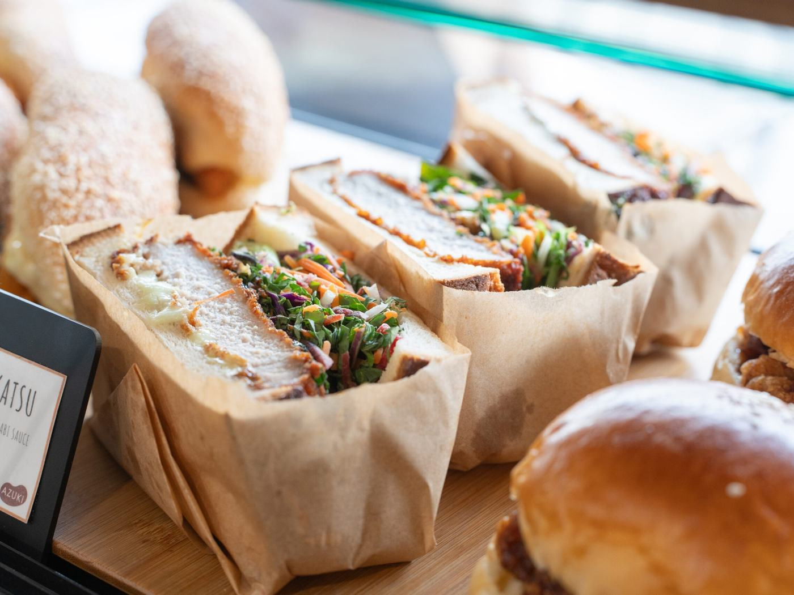
From the oven
Much loved originals, and some exciting new ones.
Swipe or scroll sideways to see more.
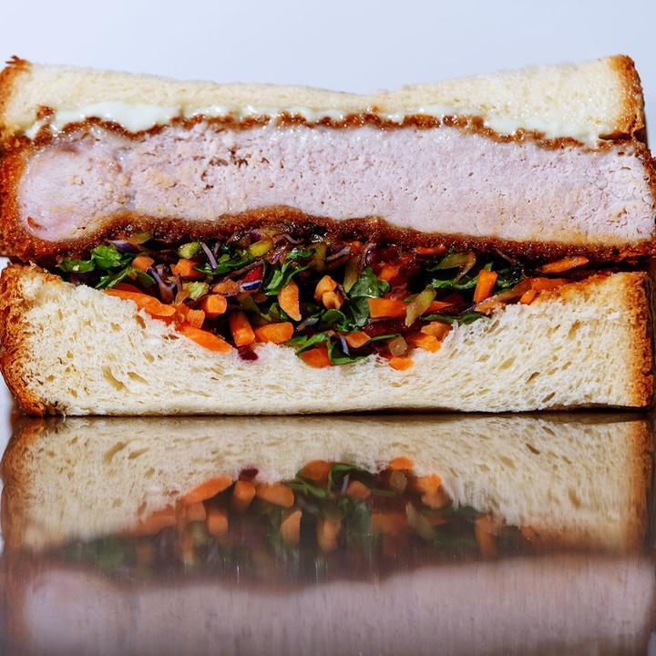
Wasabi Pork Katsu Sandwich
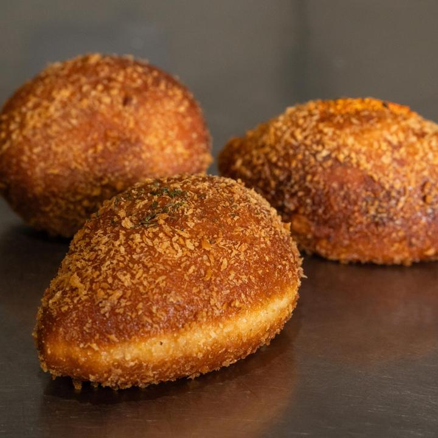
Curry pans
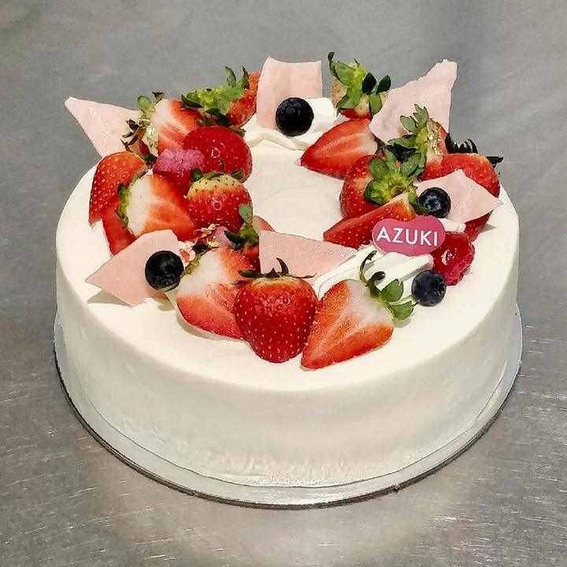
Strawberry decoration cake
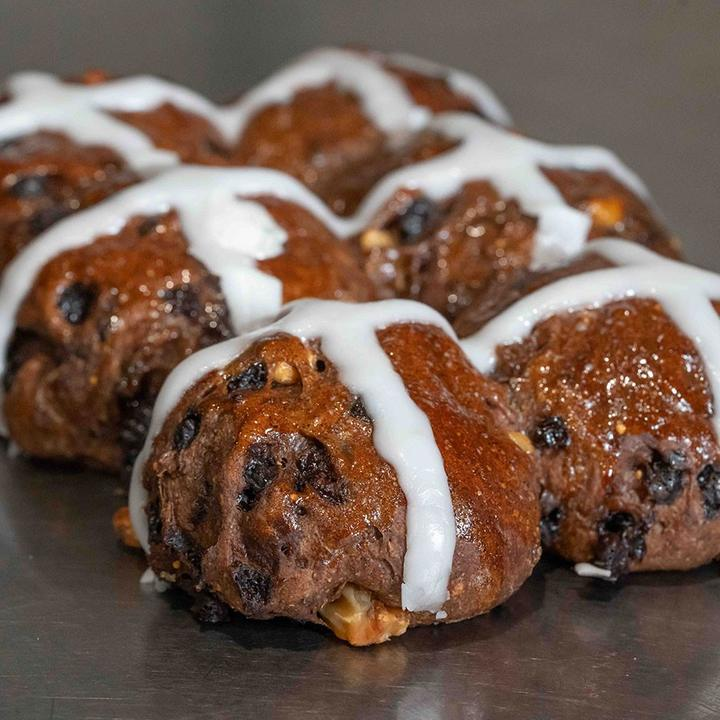
Hot cross buns
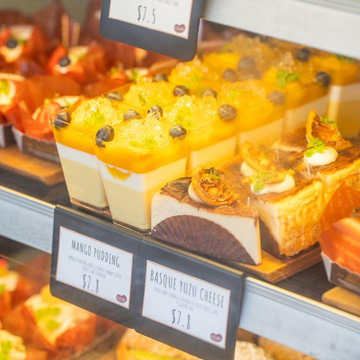
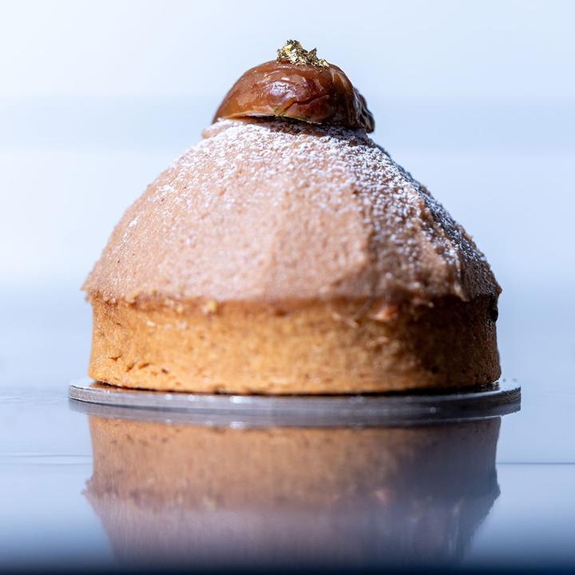
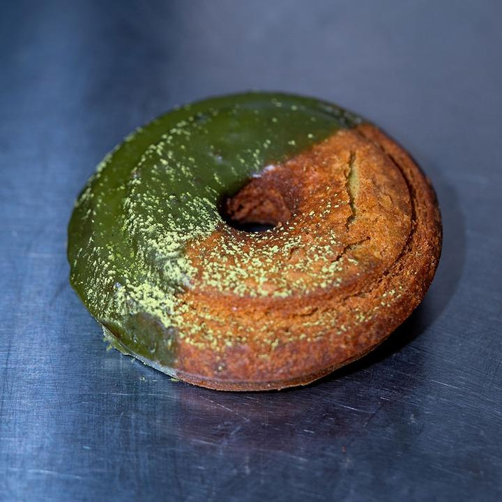
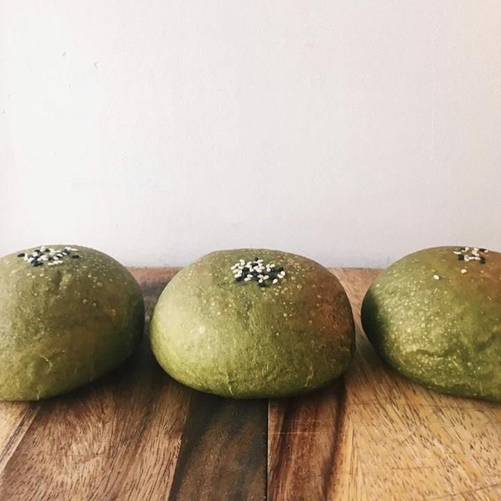
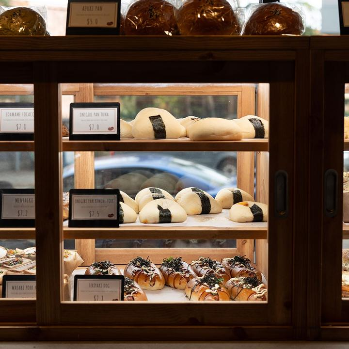
Stores and hours
Two bakeries. Which one today?
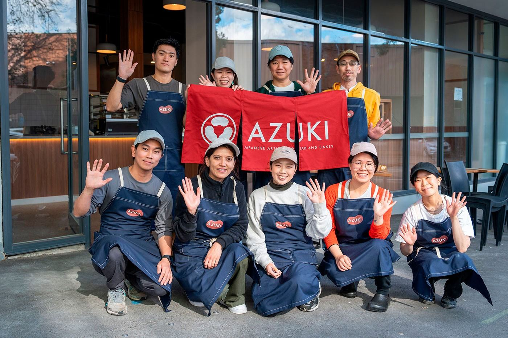
About us
About Azuki Bakery.
Since its opening in 2017, Azuki bakery has been introducing Japanese artisan cakes and breads to Sydney. Thanks to everyone’s support, Azuki has become one of the most popular bakeries in the city. We are constantly striving to improve and are always listening to feedback from our customers. A common suggestion was to open another bakery with more seating and new products. Although it was a daunting decision, we decided to take the plunge and expand to our second home in Sydney’s thriving suburb of Wolli Creek. Here, we offer you more seating (indoors and out!), more products and more street parking!
We hope you will continue to enjoy our high quality Japanese products and services.
- 2017Azuki bakery has brought a wide range of Japanese-European baked goods to Newtowners since 2017
- 11th July 2024The second store “Azuki bakery Wollicreek” opened
- 11 May 2026Newtown begins opening on Mondays, 9:00 am – 4:00 pm
We are hiring: experienced bakers
Please email your resume to join our team: azuki.bakery.office@gmail.com
Contact
Send a message to either store.
Follow
- Instagram @azuki.bakeryNewtown
- Instagram @azuki.bakery.wollicreekWolli Creek
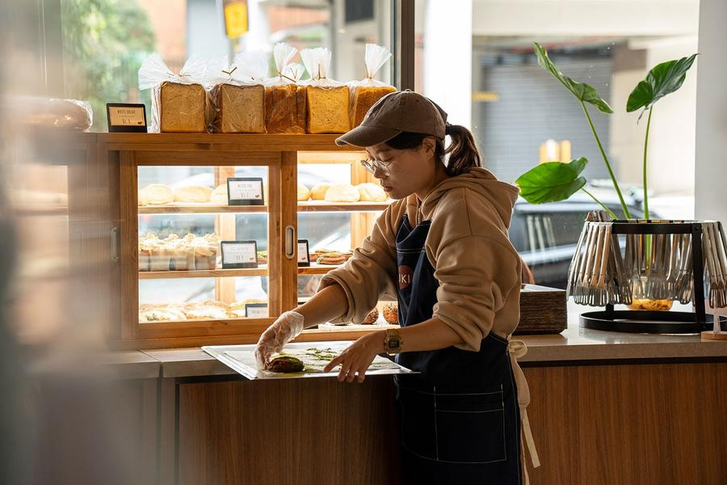